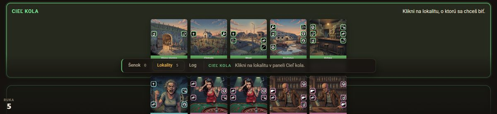
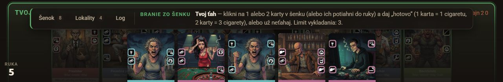
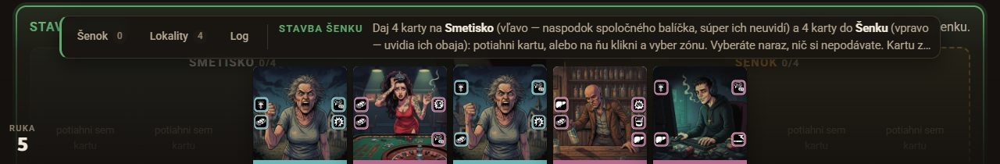
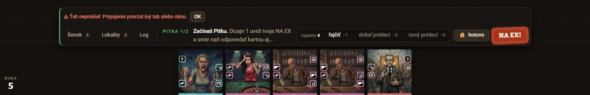
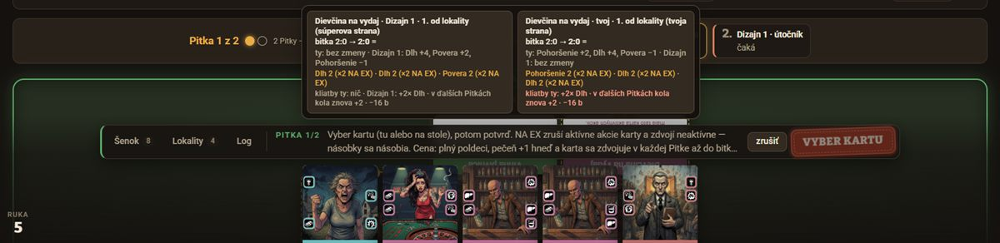
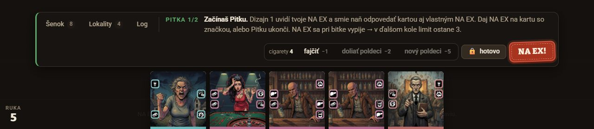
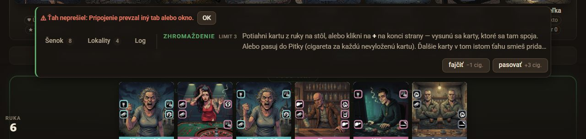
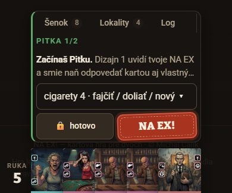

NA EX! · UI dizajnér · 21. 10. 2026 · id pokyn-bar-20261021-1639
Pás pokynov nad rukou
Cieľ: herný stôl /hra, apps/web/src/hra/HernaPlocha.tsx:3654 (.pokyn, text z funkcie pokyn ~r. 1755–2580) a apps/web/src/hra/hra.css (.pokyn*). Dôkazy pochádzajú z relácie playtest/20261021-143916 (miestnosť TSSM, Dizajn 1 a Dizajn 2), ktorú som pretiahol od voľby cieľa až po Pitku 1/2. Pohľad UX dizajnéra na tú istú časť: dizajn-pokyn-bar-20261021-1639-ux.html.
Verdikt. Pás robí naraz štyri veci: navigáciu (Šenok / Lokality / Log), správy (chyba, účet Pitky), návod (nadpis a až ≈ 370 znakov textu) a ovládanie (až 7 tlačidiel). Pritom pláva cez stôl, takže zakrýva presne to, na čo pokyn ukazuje: lokality, šenok aj líniu pri výbere NA EX. Nad rukou má zostať len čo urobiť teraz a tlačidlo, ktorým to urobíš. Navigácia sa presunie ku kôpkam pri ruke, vysvetlenia za „podrobnosti“, výber kariet na miesto ruky a celé to na pevný pult, pod ktorý stôl nezasahuje. Tlačidlo NA EX! ostáva a jeho pečiatkový jazyk prevezme celý pult.
Súčasný stav
Snímky sú výrezy okolia pásu (celé snímky a poznámky sú v playtest/dizajn/pokyn-bar-20261021-1639/). Desktop má 1600 × 1000, notebook 1280 × 800 a mobil 390 × 844.

1 · Cieľ kola, desktop. Pás leží cez lokality, na ktoré má hráč kliknúť. Panel hovorí „Klikni na lokalitu, o ktorú sa chceš biť.“ a pás to opakuje inými slovami. Jantárové „Lokality“ pritom ťahá oko inam. (144016-hrac2-p2-start-hore)

2 · Branie zo šenku, 1280 × 800. Šenok, z ktorého treba brať, je celý pod pásom a rukou. Vidieť len okraje kariet. (144238-hrac1-branie-nb-hore)

3 · Stavba šenku, 1280 × 800. Text je orezaný na „…Kartu z…“, čiže pravidlo o vracaní karty pravým klikom zmizlo. Drop zóny sú pod pásom. (144150-hrac1-stavba-nb-hore)

4 · Pitka s chybou, desktop. Chyba pridá do pásu ďalší riadok. Na jednom riadku je sedem ovládačov a nedostupné „doliať −2“ a „nový poldeci −5“ sa od dostupných skoro nelíšia. (144401-hrac2-pitka-dole)

5 · Výber NA EX. Náhľad sa otvorí nad pásom a zakryje líniu, teda tie karty, medzi ktorými sa vyberá. NA EX! vybledne na „VYBER KARTU“ a text je orezaný na „…až do bitk…“. (144426-hrac2-pitka-naex-klik)

6 · Pitka, 1280 × 800. Akcie spadnú do druhého riadku (blok @media 761–1400 px) a pás narastie na ≈ 120 px. (144409-hrac2-pitka-nb-dole)

8 · Zhromaždenie s chybou, 1280 × 800. Pás má ≈ 150 px a prekrýva rad starších. Hláška „Pripojenie prevzal iný tab“ vznikla pri fotení, ale presne takto vyzerá každá chyba ťahu. (144319-hrac1-zhrom-nb-hore)

7 · Pitka, mobil. Pás má ≈ 285 z 390 px, za „Log“ visí zvislý oddeľovač a text je orezaný. Hotovo a NA EX! sú v dosahu palca, čo je dobré. (144417-hrac2-pitka-mob-dole)
Čo sa do pásu tlačí a kam to patrí
Michal sa pýtal, či pás na tomto mieste vôbec patrí. Odpoveď závisí od jeho časti. Pri ruke má zmysel len to, čo hráč použije práve teraz. Ostatné má lepšie miesto.
Časť
Čo v nej je (kód)
Rozsah
Kam patrí
Navigácia
Šenok n · Lokality n · Log nové (HernaPlocha.tsx:3656)
vždy, ≈ 230 px šírky
Kôpky pri ruke (N3). Šenok a lokality sú kôpky kariet, log je bloček. Pusteniu karty „späť“ dávajú väčší a prirodzenejší cieľ.
Udalosti
chyba ťahu, účet Pitky, súperov posledný ťah (3175)
po ťahu, +1 riadok (≈ +30 px)
Jazýček nad pásom (N1), neskôr vytlačený bloček (N5). Výška pásu sa už nemení.
Návod
nadpis + text z pokyn (1755–2580)
30 až ≈ 370 znakov (Patronát), orez na 2 riadky
Jedna veta pri ruke, prečo a koľko za podrobnosti (N4). Ak úlohu vlastní panel na stole (Cieľ kola, šenok), pás len ukáže naň.
Výber
kandidáti Patronátu (1850), Vízia (2040), Zberný dvor (2210), náhľad NA EX (2114)
karty 72–84 px v texte, náhľad NA EX nad pásom cez líniu
Podnos na mieste ruky (N4, N5). Ruka sa počas výberu odsunie a stôl ostane voľný.
Ovládanie
pokyn.tlacidla: fajčiť, pasovať, cigarety, hotovo, NA EX!…
1 až 7 prvkov
Ostáva pri ruke, vpravo v dosahu myši aj palca, s jasnou hierarchiou pečiatok (N2).
Audit
Kontrasty som prepočítal podľa WCAG 2.2 zo skutočných tokenov schémy Krčma (schemy.css), vrátane color-mix v oklab. Pozadie pásu vychádza #171411.
#
Závažnosť
Oblasť
Problém
Dôkaz
A1
vysoká
Rozloženie
Pás pláva cez stôl (je súčasťou pevnej .ruka) a zakrýva to, na čo pokyn ukazuje: spodok lokalít v Cieli kola, na 1280 × 800 celý šenok pri braní, drop zóny pri stavbe a s chybou aj rad starších. Sledovateľ to vytýka v piatich hodnoteniach.
snímky 1, 2, 3, 8; hra.css:1297, HernaPlocha.tsx:3654; playtest/20261011-183315 a 20261012-055944/sledovatel/hodnotenie.md
A2
vysoká
Hierarchia
Štyri roly v jednom páse bez stálych miest. Výška skáče zo 46 na ≈ 150 px a cez --pokyn-h posúva ruku aj spodok stola, takže oko pri každej zmene hľadá znova.
snímka 1 oproti 8; HernaPlocha.tsx:3175, 3204; hra.css:1404
A3
vysoká
Typografia
Text pokynu je orezaný na 2 riadky (line-clamp) a odrežú sa práve ceny a pravidlá: „…v každej Pitke až do bitk…“, „…Kartu z…“, „Ďalšie karty v to…“. Hráč sa ich nemá ako dočítať.
snímky 3, 5, 6; hra.css:3746
A4
vysoká
Rozloženie
Náhľad NA EX sa otvára nad pásom (bottom: calc(100% + 10px)) a prekrýva líniu, teda karty, medzi ktorými hráč vyberá.
snímka 5; hra.css:2214
A5
stredná
Hierarchia
Pokyny sú duplicitné. V Cieli kola panel hovorí „Klikni na lokalitu, o ktorú sa chceš biť.“ a pás „Klikni na lokalitu v paneli Cieľ kola.“ Pri braní zo šenku hlavička panela aj pás opakujú ceny 1 a 3 cigarety. Pás pritom hovorí „daj hotovo“, ale tlačidlo „už neťahám“ je v paneli.
V páse súperia tri akcenty: zelený prúžok a nadpis (môj ťah), jantárové pulzujúce „Lokality“ (treba) a tehlové NA EX!. Pulz ťahá oko na tlačidlo, hoci pokyn posiela do panela.
snímka 1; hra.css:1466
A7
stredná
Kontrast
Nadpis ČAKÁŠ (#696b69 na #171411) má 3,41 : 1 pri 12,8 px, pod hranicou 4,5. Počty .pocet (#8b7d6a na #1e1914) majú 4,35 : 1 pri 11,8 px a ceny .cena na tlačidle (#8b7d6a na #332a21) 3,51 : 1. Obrys pásu voči stolu má len 1,51 : 1, hranicu nesie iba tieň.
Ovládače nemajú hierarchiu. V Pitke má 7 prvkov rovnakú tichú váhu, vyčnieva len NA EX!. Nedostupné tlačidlá sa líšia iba opacity: 0.45 a v jednom rade sú výšky 32 aj 44 px.
snímky 4, 6; hra.css:1435; styles.css:108
A9
stredná
Stavy
Udalosti sú ďalší riadok pásu. Chyba nemá vlastný vizuál (len červený text a OK) a účet Pitky po chvíli zmizne bez stopy.
snímky 4, 8; hra.css:3719
A10
nízka
Stavy
V režime výberu NA EX! vybledne (opacity 0,5, text 3,22 : 1) a jeho text sa zmení na pokyn „VYBER KARTU“. Pôsobí to ako chyba, nie ako „ešte vyber“.
snímka 5; hra.css:1698
A11
nízka
Responzivita
Na mobile má pás ≈ 285 z 390 px, lebo .ruka má bočný padding pol karty + 16 px. Za „Log“ visí zvislý oddeľovač, prepínače majú 32 px (menej ako 44) a „RUKA 5“ zaberá ľavý okraj.
.pokyn je v CSS 6× (hra.css:1404, 2210, 2339, 2950, 3948, 3962), .pokyn-tlacidla 5× a .pokyn-text 4×, takže každá úprava prepisuje predošlú. Nadpis potrebuje !important. NA EX! má farby zadané natvrdo (#fff4e2, #5e1b0f, #b93a23).
hra.css
A13
nízka
Ikonografia
Akcie so zdrojmi sú len text („fajčiť −1“, „doliať poldeci −2“), hoci web má ikony cigarety a poldeci (Panely.tsx:29, 39). Jediná ikona v páse je emoji 🔒.
snímka 4; HernaPlocha.tsx:2302
Návrhy
Ukážky sú živé a používajú tokeny a texty z hry. Prepínaš v nich fázu, udalosť a šírku a Pred vždy ukazuje dnešný stav. Návrhy sa na seba vrstvia: N2 = N1 + pečiatky, N3 = N2 + kôpky. N4 a N5 sú dve alternatívy nad N3 a medzi nimi treba rozhodnúť. Mobilná šírka sa prepína tlačidlom, na telefóne sa zapne sama (container query).
Štruktúra ostáva, mení sa disciplína. Ovládače majú stálu výšku 40 px na 8 px rytme a pás má min. 56 px, takže medzi fázami neskáče. Mriežku nahradí flex-wrap: text má vždy aspoň ≈ 36 znakov a tlačidlá spadnú pod neho až vtedy, keď sa naozaj nezmestia. Tým odpadne blok @media 761–1400 px. Nadpis pri čakaní dostane --info (9,65 : 1 namiesto 3,41), počty --slaby-text (5,52 : 1) a ceny --tlmeny (5,97 : 1 na tlačidle). „Treba“ už nepulzuje jantárovým textom, ukáže sa len malá jantárová bodka. Udalosti sa zobrazia ako jazýček nad horným okrajom pásu, takže pás nenarastie a ruka neposkočí. Keď je text dlhší ako dva riadky, pribudne tlačidlo „viac“ a nič sa už nestratí. Na mobile má pás celú šírku a prepínače sú tri segmenty po 44 px.
Presná zmenaŠesť blokov .pokyn sa zlúči do jedného. Do TSX pribudne tlačidlo .pokyn-viac, ktoré sa zobrazí, keď scrollHeight > clientHeight. .pokyn-udalosti sa umiestni absolútne.
MobilPás na celú šírku (bočný padding sa presunie z .ruka na .ruka-rad), prepínače 3 × 44 px, akcie v mriežke 2 stĺpcov.
posilňuje identiturieši A8, A10, A13 · nadväzuje na N1
NA EX! funguje preto, lebo vyzerá ako pečiatka na krčmovom účte: písmo Bitter, prerušovaný vnútorný okraj, tvrdý tieň „0 3px 0“ a rozhodný tvar. Tento jazyk dostanú aj ostatné tlačidlá, ale v troch hlasitostiach, aby NA EX! ostal najhlasnejší:
Tehlová pečiatka natočená o −2° je len NA EX!. Ostáva bez zmeny.
Jantárová pečiatka je hlavná akcia fázy: neberiem, do ruky, pasovať (potvrdenie), hotovo, keď NA EX nejde, a späť do lobby. Rovná, bez natočenia. Text --na-akcente na --akcent má 8,35 : 1.
Tichá pečiatka je nevratné, ale nie hlavné tlačidlo (hotovo popri NA EX!). Má tmavé pozadie, prerušovaný vnútorný okraj a namiesto emoji 🔒 SVG zámok.
Lístky sú tiché akcie so zdrojmi (fajčiť, doliať, nový poldeci, zrušiť) s ikonou cigarety alebo poldeci z panela hráča a s cenou na „cenovke“. Nedostupný lístok nevybledne, má prečiarknutú cenu a --slaby-text (5,81 : 1).
Nadpis fázy bude razítko v rámčeku s dvojitým okrajom písmom Bitter, ktoré pripomína pečiatku na lístku. Skupina „cigarety 4“ sa zmení na krabičku: ikona cigarety, počet písmom Bitter a za ňou lístky. Nedostupné NA EX! (výber cieľa, Kostol, prázdny poldeci) sa ukáže ako nevypálená pečiatka, teda prerušovaný obrys s textom --cervena-text (6,06 : 1) a stále s nápisom NA EX!. Pokyn hovorí, čo treba urobiť, a tlačidlo si nechá svoje meno.
Presná zmenaNový komponent .pecatka s variantmi .ticha a NA EX! (existujúce .tlacidlo-naex) a .listok v páse. Farby berie z tokenov cez lokálne premenné --p-*, nová farba v schéme nepribudne. V TSX pribudne <IkonaCigareta /> a <IkonaPoldeci plny /> z Panely.tsx.
MobilPečiatky majú 44 px a delia sa o šírku. Krabička sa zbalí do jedného tlačidla „cigarety 4 ▾“, ako to robí dnešné <details>.
Náročnosťmalá až stredná (CSS + triedy v ≈ 15 tlačidlách funkcie pokyn)
Súboryhra.css (nový blok pri 1657), HernaPlocha.tsx 1755–2580 (triedy, ikony), Panely.tsx (export ikon už je)
Prepínače Šenok, Lokality a Log nie sú pokyn, ale miesta na stole. Z pásu odídu a lehnú si vľavo vedľa ruky ako kôpky kariet. Šenok a Lokality majú rub kariet s jantárovým prerušovaným rámčekom (rovnaký motív ako NA EX!) a log je papierový bloček. Počet je v okrúhlom odznaku s tabuľkovými číslicami a nové záznamy logu majú jantárový odznak. Prázdny šenok je len prerušovaný obrys. Stav „treba“ kôpku nadvihne o 4 px a obtiahne jantárom (9,43 : 1 voči pozadiu), čo je pokojnejšie ako pulz. Kartu zo šenku či lokalitu vrátiš pustením na kôpku, ktorá je väčší a prirodzenejší cieľ ako tlačidlo s textom. Pás tým získa ≈ 230 px pre text a menej sa zalamuje.
Presná zmenaBlok .pokyn-vrstvy (HernaPlocha.tsx:3656–3679) sa presunie do nového <nav className="kopky" aria-label="Stôl"> vedľa .ruka-nadpis. Triedy treba, ciel-zona, nad-cielom a data-ciel ostávajú. Tlačidlá dostanú aria-pressed.
MobilKôpky majú 50 px a ležia v ľavom stĺpci pod pásom spolu s počtom kariet v ruke. Ruka je vpravo od nich.
Náročnosťstredná (rozloženie .ruka na mriežku, drop ciele)
alternatíva A · pás ostáva plávaťrieši A1 (čiastočne), A3, A4, A5 · nadväzuje na N3
Pás má jednu vetu: sloveso a predmet, najviac ≈ 80 znakov. Prečo a koľko (ceny, výnimky, pravidlá) je za tlačidlom podrobnosti, ktoré otvorí bublinu s dĺžkou riadku 60 znakov. Nič sa neoreže, len sa to nevnucuje. Keď úlohu vlastní panel na stole (Cieľ kola, branie zo šenku), panel dostane zelené razítko TVOJ ŤAH s úplnou inštrukciou a pás už len ukazuje šípkou „↑ Vyber lokalitu v paneli Cieľ kola“. Tlačidlo, ktorým sa ťah končí, je ale vždy v páse („už neťahám“ sa presunie z panela). Výber kariet (cieľ NA EX, Vízia, Zberný dvor, Patronát) sa už neotvára nad pásom cez líniu, ale na mieste ruky ako podnos. Náhľad tak už nezakrýva líniu nad pásom a ciele na stole sú obtiahnuté tehlovou prerušovanou čiarou. Pás však stále pláva, takže na nízkej obrazovke môže spodok stola zakryť. Preto je pri A1 len „čiastočne“.
Presná zmenaTyp Pokyn dostane polia detail?, vyber? (podnos) a vPaneli?. Texty v pokyn sa rozdelia na vetu a detail. .naex-nahlad (hra.css:2214) sa zmení na .podnos v .ruka.
MobilPás má 1 až 2 riadky. Podnos je zvislý zoznam na celú šírku a ruka je počas výberu skrytá.
Náročnosťstredná až veľká (prepis ≈ 40 textov v pokyn spolu s UX)
SúboryHernaPlocha.tsx 136 (typ), 1755–2580, 2805–2830 a 2955–3015 (panely), hra.css 2210–2260
alternatíva B · odvážny smerposilňuje identiturieši A1, A2, A3, A4, A5, A9 · zahŕňa N2–N4
Plávajúci pás zmizne. Spodok obrazovky je pult, pevná krčmová doska s mosadznou lištou (--akcent-tmavy, 3 px). Stôl sa končí nad pultom (padding-bottom: var(--pult-h)), takže pod pultom nič neleží. Ak sa stôl nezmestí, posúva sa. Pult má pevné miesta:
Tabuľka navrchu je zapustená do pultu: razítko fázy, jedna veta, podrobnosti a vpravo krabička cigariet, lebo tie akcie sú vedľajšie.
Kôpky vľavo, ruka v strede (počas výberu sa na jej miesto položí podnos) a pečiatky vpravo: hotovo a NA EX!, vždy na tom istom mieste pod palcom aj myšou.
Udalosti sa vytlačia ako bloček z pokladne: papier v --text s textom --pozadie (15,1 : 1) a zubatým spodným okrajom. Vysunie sa za 250 ms nad pečiatkami, účet Pitky zmizne po 6 s a chyba ostane do OK. Chybový bloček má tehlový okraj, --tehla-tmava na papieri má 5,4 : 1.
Pult nemení výšku medzi fázami (176 px na desktope, s podnosom 210 px), takže oko vždy vie, kam sa pozrieť. Je to najväčší zásah, ale jediný, ktorý A1 rieši úplne a nie len zmenšením plochy, ktorá sa prekrýva.
Presná zmena.ruka sa premenuje na .pult a dostane mriežku "tabula tabula tabula" / "kopky ruka akcie". --pokyn-h nahradí pevná --pult-h: clamp(160px, 22vh, 210px). .hra dostane padding-bottom: var(--pult-h). Udalosti sa vykreslia ako .blocek s role="status" (chyba ako role="alert").
MobilMriežka "tabula" / "ruka" / "kopky akcie": hotovo a NA EX! sú dole v zóne palca, ruka sa posúva vodorovne a krabička sa zbalí do „cigarety 4 ▾“. Pult má ≈ 300 px, dnes pás a ruka zaberajú ≈ 260 px a prekrývajú stôl.
Náročnosťveľká (rozloženie .hra a .ruka, lupa kariet v ruke, drop ciele, mobil)
Hneď N1 Upratať pás (≈ 1 h). Opraví kontrasty pod AA, zastaví skákanie výšky a orezávanie textu a zlúči šesť CSS blokov do jedného. Nič z toho sa neskôr nezahodí.
Potom N2 Pečiatkový jazyk. Nadväzuje na to, čo sa Michalovi na NA EX! páči, a dá pásu hierarchiu: NA EX! je najhlasnejšie, hlavná akcia druhá, ostatné tiché. Dá sa nasadiť samostatne.
N3 Kôpky pri ruke. Z pásu odíde navigácia a ostane čistý pokyn s tlačidlami. Kôpky prejdú bez zmeny aj do N5.
Rozhodnutie N4 alebo N5. Odporúčam N5 Pult. Jediný úplne rieši najčastejšiu sťažnosť playtestov (pás a ruka prekrývajú stôl) a prirodzene zahŕňa jednu vetu, podnos aj bloček z N4. N4 je bezpečnejšia cesta, ak stôl nesmie prísť o výšku.
S UX návrhom (dizajn-pokyn-bar-20261021-1639-ux.html) treba zladiť hlavne texty: o tom, ktorá veta ostane v páse a čo pôjde do podrobností, má rozhodnúť UX, ja dodávam ich vizuálnu formu.
Otázky na Michala
Smie stôl prísť o spodných ≈ 180 px (pult je pevný a stôl nad ním sa posúva), aby pod pásom už nič neležalo? Ak áno, N5. Ak nie, N4.
Šenok, Lokality a Log ako kôpky vľavo pri ruke sú v poriadku? Alternatívou je dať ich hore do osi kola vedľa „vzdať sa“ a „odísť“.
Dlhé vysvetlenia za „podrobnosti“: súhlasíš, alebo ich majú noví hráči vidieť stále (napríklad prvé dve partie rozbalené)?
Pečiatka pre hlavné tlačidlá (neberiem, pasovať, hotovo) v jantárovej farbe, alebo má byť pečiatka výhradne NA EX!? Natočenie o −2° v každom prípade ostáva len NA EX!.
Udalosti ako svetlý vytlačený bloček v tmavej krčme sa ti páčia, alebo radšej tmavý lístok?